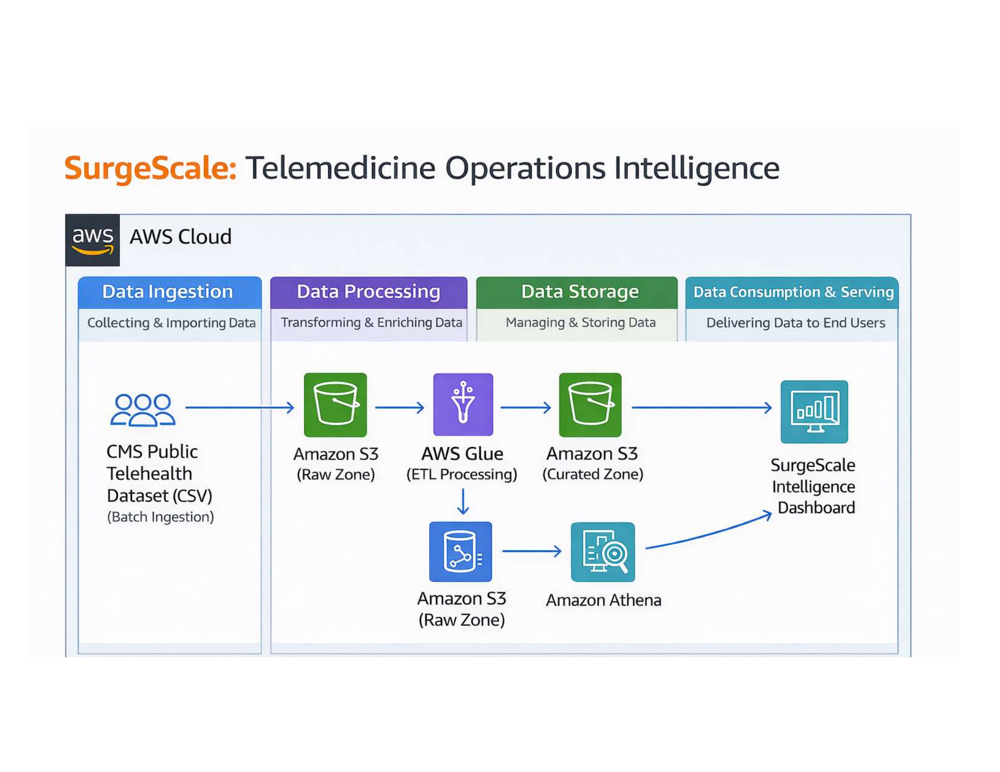
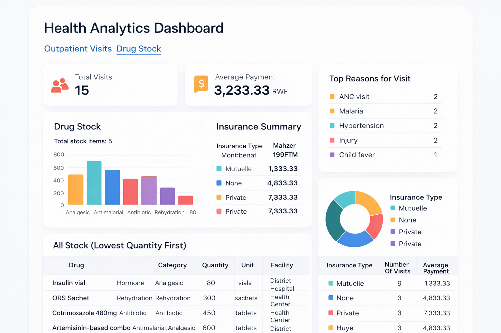
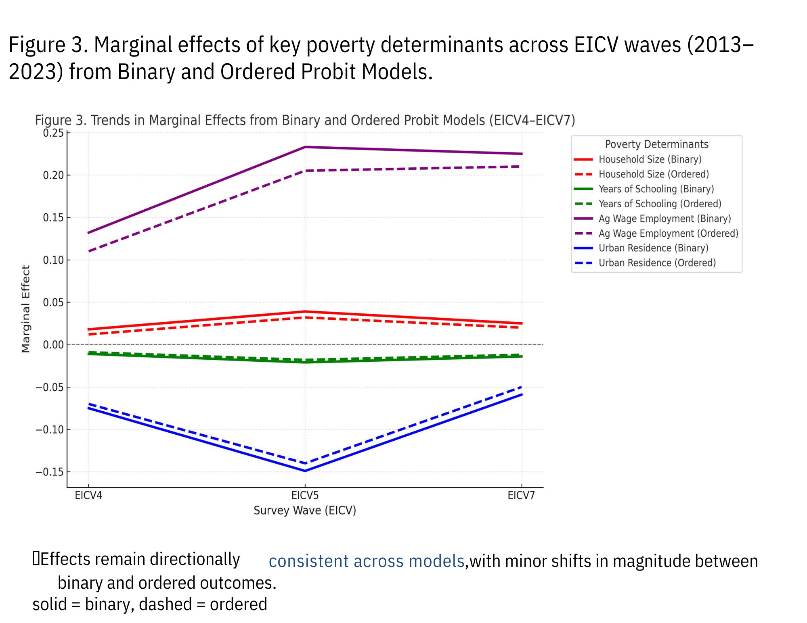

Data Scientist | Data Engineer | Cloud & Machine Learning Analytics
I build data-driven solutions using analytics, AI, machine learning, and cloud technologies to solve problems in healthcare, business, research, and socio-economic development.
About
Bridging data, AI, cloud, and research to turn complex information into practical solutions.
Data Scientist, Data Engineer & Business Analytics Professional
I am a data scientist and data analyst with a strong focus on big data analytics, machine learning, cloud technologies, and research-driven problem solving.
I build data pipelines, predictive models, and analytical solutions that transform complex datasets into actionable insights. My work combines data analysis, artificial intelligence, statistical modeling, and cloud-based tools to support smarter decisions in healthcare, business, socio-economic development, and research.
I am especially interested in using data and AI to solve real-world challenges, improve operational efficiency, and generate evidence that informs strategy, policy, and innovation.
Josephat Kunesha
Data Scientist | Data Analyst | Big Data, AI & Cloud Analytics
Python
Data analysis, machine learning, and data pipeline development.
95%SQL
Database querying, data extraction, and data management.
90%Machine Learning
Predictive modeling, classification, and regression analysis.
85%Artificial Intelligence
AI systems, intelligent data analysis, and model development.
85%Statistics
Statistical modeling, hypothesis testing, and data interpretation.
90%Data Engineering
Data pipelines, data processing, and scalable data systems.
85%AWS Cloud
Cloud-based data infrastructure and scalable analytics systems.
80%Stata
Econometric analysis, statistical research, and policy analytics.
85%Resume
Professional experience in data science, research analytics, data engineering, and data-driven decision systems.
Professional Experience
Experience in health information systems, research analytics, monitoring and evaluation, and field-based data quality improvement.
CIICHIN, Kigali, Rwanda
Feb 2022 – Dec 2024Research Assistant
- Monitored USAID health commodities during TPM spot checks, improving supply chain accuracy.
- Collected and cleaned data for baseline supply chain assessments to support reliable analysis.
- Led field teams for MomConnect and eIR projects, strengthening data quality and reporting.
IITA, Kigali, Rwanda
Jan 2020 – Dec 2020Research Assistant
- Contributed to mixed-methods research with farmers and local leaders in rural Rwanda.
- Collaborated with international teams to organize work and maintain reliable research outputs.
LODA, Kigali, Rwanda
Jan 2015 – Dec 2015Professional Intern
- Supervised interns and data clerks working with SPSS and CSPro at district level.
- Supported monitoring and evaluation activities in the district planning unit.
Data Science & Analytics Projects
Selected projects demonstrating data engineering, machine learning, business analytics, and applied research.
SurgeScale: Telemedicine Operations Intelligence
OngoingAWS Data Engineering Project
- Built a scalable AWS-based telemedicine analytics pipeline.
- Designed ingestion of CMS public telehealth datasets into Amazon S3.
- Applied ETL processing with AWS Glue and querying with Amazon Athena.
- Structured raw and curated data zones to support operational intelligence dashboards.
Health Analytics Dashboard
Flask + MySQL Web Application
- Developed a Flask and MySQL application for outpatient visits and drug stock analytics.
- Designed a relational database structure for healthcare operations data.
- Implemented SQL-based analysis, backend logic, and data quality checks.
- Demonstrated data modeling, dashboard development, and server-side analytics.
Analysis of Determinants of Poverty in Rwanda
Mar 2025 – Jul 2025Research Project – University of Granada
- Analyzed ten years of EICV data using Stata and Python to study the drivers of poverty in Rwanda.
- Applied binary and ordered probit models to distinguish between moderate and severe poverty.
- Compared results across EICV4, EICV5, and EICV7 to identify persistent structural inequalities.
Education & Academic Training
Academic foundation in statistics, economics, and data science.
University of New Haven, West Haven, CT
Aug 2025 – May 2027Master of Data Science
Graduate training in machine learning, data analytics, data engineering , artificial intelligence and data-driven problem solving.
University of Granada, Granada, Spain
Oct 2024 – Jul 2025Master of Economics
Advanced training in research, econometrics, economic modeling, and data-driven policy analysis.
University of Rwanda, Kigali, Rwanda
Bachelor of Science with Honors in Applied Statistics
Training in applied statistics, research methods, and quantitative analysis.
Certifications
Selected certifications in artificial intelligence, data engineering, SQL analytics, APIs, cloud systems, and big data technologies.
Microsoft & LinkedIn / University of New Haven
Career Essentials in Generative AI
Generative AI concepts, tools, and responsible AI fundamentals.
Complete Guide to SQL for Data Engineering
Advanced SQL queries, database pipelines, and data engineering workflows.
Data Science Foundations – Data Engineering
Data pipelines, ETL processes, and scalable data modeling principles.
Python: Working with REST and Web Data
Building Python workflows for APIs and web data integration.
SQL Tips and Tricks for Data Science
Practical SQL techniques for analytics and data science workflows.
Cloud NoSQL for SQL Professionals
Cloud-based database systems and NoSQL architecture.
NoSQL Essential Training
Distributed databases, document storage, and modern data systems.
Big Data Analytics & Visualization
Techniques for analyzing and visualizing large-scale datasets.
Projects & Portfolio
Selected data science, data engineering, cloud analytics, and research projects demonstrating practical applications of machine learning, analytics, and scalable data systems.
References: Available upon request.
- All Projects
- Data Engineering
- Data Science
- Research

{kind=link}
Telemedicine Operations Intelligence
Built an AWS data pipeline using S3, Glue, and Athena to analyze telemedicine usage patterns and support operational healthcare analytics dashboards.

{kind=link}
Health Analytics Dashboard
Developed a Flask + MySQL application to analyze outpatient visits and drug stock data using relational databases, SQL analytics, and backend reporting.

{kind=link}
Determinants of Poverty in Rwanda
Analyzed EICV household survey data using Stata and Python to identify structural drivers of poverty across education, employment, and location.
Technical Capabilities
Core technical capabilities across data science, data engineering, cloud analytics, and research data systems.
Machine Learning & AI
Develop predictive models, classification systems, and statistical learning solutions using Python and modern machine learning frameworks.
Data Analytics & Statistics
Perform advanced statistical analysis, regression modeling, and causal analysis using Python, Stata, and SQL.
Data Engineering
Design data pipelines, build ETL workflows, and manage structured and large-scale datasets using SQL and cloud data platforms.
Cloud Data Systems
Deploy scalable data solutions using AWS services including S3, Glue, Athena, and cloud analytics architectures.
Business & Economic Analytics
Analyze market trends, economic indicators, and operational data to support data-driven business strategy and decision making.
Research Data Analysis
Conduct quantitative research using large-scale survey data and econometric models to analyze socio-economic systems.
Certifications
Professional certifications in data science, cloud analytics, and machine learning technologies.
AWS Cloud & Data Analytics
Cloud architecture, data pipelines, and analytics systems.
Machine Learning Specialization
Supervised and unsupervised learning, predictive modeling.
Data Science Professional Certificate
Data analysis, statistical modeling, and Python analytics.
Contact
Interested in collaboration, research partnerships, or data science opportunities? Feel free to reach out.
References: Available upon request.